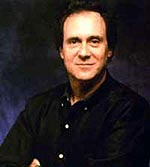
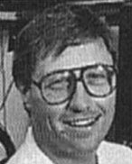
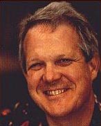
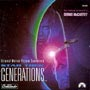

|
Acordes
perdidos
 A
Nova Gerao foi uma srie excepcional. Provou que a
franquia de Jornada nas Estrelas podia ter uma nova vida na
telinha, determinou novos padres de efeitos especiais, alcanou
ndices de audincia inimaginveis, foi premiada diversas vezes
por seu apuro tcnico na produo. E possua uma fantstica
trilha sonora. Certo? A
Nova Gerao foi uma srie excepcional. Provou que a
franquia de Jornada nas Estrelas podia ter uma nova vida na
telinha, determinou novos padres de efeitos especiais, alcanou
ndices de audincia inimaginveis, foi premiada diversas vezes
por seu apuro tcnico na produo. E possua uma fantstica
trilha sonora. Certo?
Errado.
Um dos mais notrios pontos baixos da srie foi justamente a
ausncia de uma trilha sonora grandiosa em seus episdios.
Msicas com vida prpria, acentuando as cenas mostradas,
cativando a imaginao do espectador. Isso nunca foi um padro
para a Nova Gerao. E o que muitos poucos sabem que a
culpa, afinal, no de seus compositores.
A responsabilidade sobre a msica dos episdios est com os
produtores, que dizem aos compositores o que no escrever,
supervisionam cada nota gravada, e mixam a msica sob efeitos
sonoros pesados. Sob todos os efeitos, compositores como Dennis
McCarthy e Jay Chattaway entregam exatamente o que os produtores
lhes pedem: msicas que apenas sublinham a ao, e que no a
enaltecem.
 Quando
a produo de A Nova Gerao teve incio, o gosto
musical de Rick Berman foi contestado por Bob Justman, um veterano
da Srie Clssica que preferia msicas grandiosas e
audaciosas, que foi o que, na poca, McCarthy e Ron Jones
produziram. Quando Justman deixou a srie ao final de sua
primeira temporada, Berman ficou livre para instituir sua
abordagem. O veterano compositor McCarthy acatou a deciso
superior: no usar mais o tema de Picard, no usar percusso
eletrnica na ponte, no ser excessivamente meldico. O novato
Ron Jones, porm, que estava constantemente acima do oramento e
criava problemas nos bastidores, ignorou tais ordens. Com o
andamento da srie, o trabalho de McCarthy se tornou mais e mais
subliminar, enquanto Jones compunha trilhas dinmicas para os
episdios mais memorveis, como "The Best of Both Worlds".
McCarthy, capaz de apenas esporadicamente produzir trilhas
bombsticas como "Yesterday's Enterprise",
acabou recebendo uma crescente carga de crticas dos fs que
no entendiam que ele no era incapaz de compor como Jones, mas
sim que ele simplesmente fazia o que lhe era mandado.
 A
pacincia dos produtores com Jones (esq.) eventualmente chegou ao
fim, e aps seu trabalho para o episdio "The Drumhead",
da quarta temporada, seus servios no mais foram solicitados.
Para aumentar ainda mais a confuso, poucos conseguem explicar
por que as trilhas da srie foram compostas e gravadas com uma
orquestra de 40 pessoas, se toda a trilha acaba sendo subliminar.
Muitos compositores contestam esse "luxo", uma vez que,
para o tipo de trilha composta, um sintetizador faria trabalho
similar por um custo muito menor.
Outros compositores acabaram sendo contratados, mas alguns no
conseguiram se adequar ao estilo exigido pelos produtores. Don
Davies, veterano compositor da srie "A Bela e a Fera",
foi o responsvel pela meldica trilha do episdio "Face
of the Enemy", da sexta temporada. Os produtores no
gostaram de muitas das qualidades meldicas e bombsticas
presentes em sua trilha, e Davies acabou "canibalizando"
sua msica. Foi sua primeira e nica participao na srie.
  No
causa supresa, ento, o fato de McCarthy ter se tornado o
compositor mais freqente da srie, tendo sido responsvel pela
trilha de mais da metade dos episdios. Sua cooperao acabou
garantindo-lhe a responsabilidade de compor a trilha do primeiro
filme da Nova Gerao, "Generations",
uma trilha extensamente criticada justamente por ser uma verso
expandida das trilhas dos episdios de TV.
"Este um show que celebra o esprito humano, e para fazer
isso de modo efetivo, quando se est em um grande planeta com
rochas de papelo, voc precisa de uma grande trilha musical
para vender a idia. Ter uma grande nave viajando pela galxia,
e no permitir que a msica possua nenhuma humanidade
loucura!", critica Ford Thaxton, produtor musical da GNP/Crescendo
Records. "Estes caras tiveram uma experincia ruim em um
concerto de Vivaldi quando eram pequenos, ou o qu?"
As crticas trilha sonora continuaram existindo ao longo da
srie, e tambm foram ouvidas durante a produo de Deep
Space Nine e Voyager. Algum pode perguntar, "e
porque ningum na produo fez um esforo para melhorar este
aspecto da srie?" Fred Mollin, experiente compositor de
trilhas para televiso, responde: " difcil vender um
argumento como esse quando uma srie est tendo altos ndices
de audincia como a Nova Gerao teve". Em outras
palavras: no que se refere msica, Rick Berman s d ouvidos
mesmo a si mesmo. Assim como em todo o restante da franquia.
Fernando
Rodrigues editor do boletim Base News e escreve regularmente
sobre a Nova Gerao para o Trek Brasilis
|